TUS JUEGOSKIS

-
Mensajitos :3
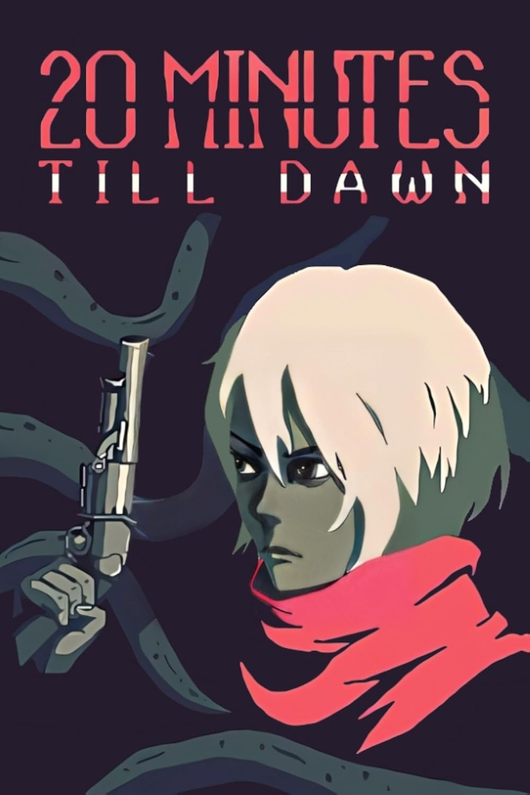
En un mundo devastado por un apocalipsis zombi, el jugador debe sobrevivir explorando ciudades, consiguiendo recursos, fabricando armas y construyendo refugios. Cada siete días ocurre una enorme horda de zombis que pone a prueba todo lo construido.
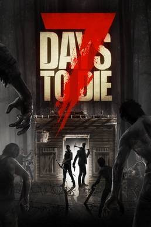
Un juego de supervivencia tipo bullet hell en el que debes resistir oleadas interminables de monstruos durante veinte minutos. Mientras sobrevives, obtienes mejoras que permiten crear combinaciones cada vez más poderosas.
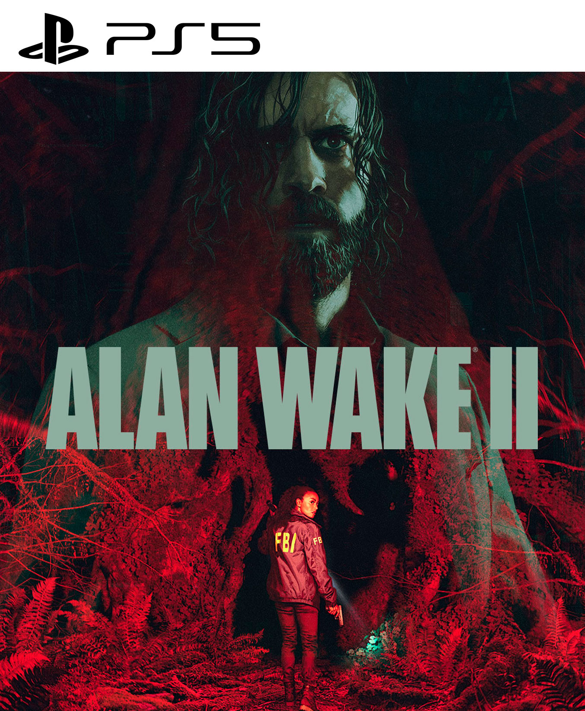
El escritor Alan Wake llega a Bright Falls buscando a su esposa desaparecida. Allí descubre que los acontecimientos de una historia de terror que no recuerda haber escrito están comenzando a hacerse realidad.

Ezio Auditore continúa su lucha contra los templarios en Roma. Para liberar la ciudad, deberá reconstruir la Hermandad de Asesinos, reclutar nuevos miembros y enfrentarse a la poderosa familia Borgia.

Batman debe enfrentarse al misterioso Arkham Knight y al Espantapájaros, quienes amenazan con destruir Gotham. Mientras combate al crimen, Bruce Wayne también debe enfrentarse a sus propios miedos y a la influencia del Joker.
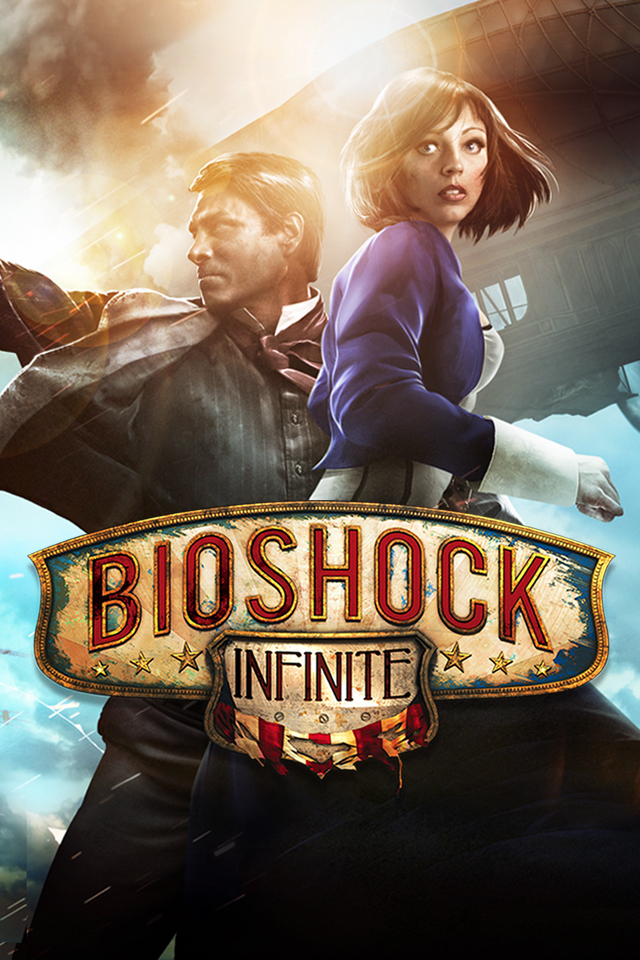
Booker DeWitt viaja a la ciudad flotante de Columbia para rescatar a una joven llamada Elizabeth. Lo que comienza como un simple rescate termina revelando misterios relacionados con realidades alternativas, religión, política y el pasado de los protagonistas.
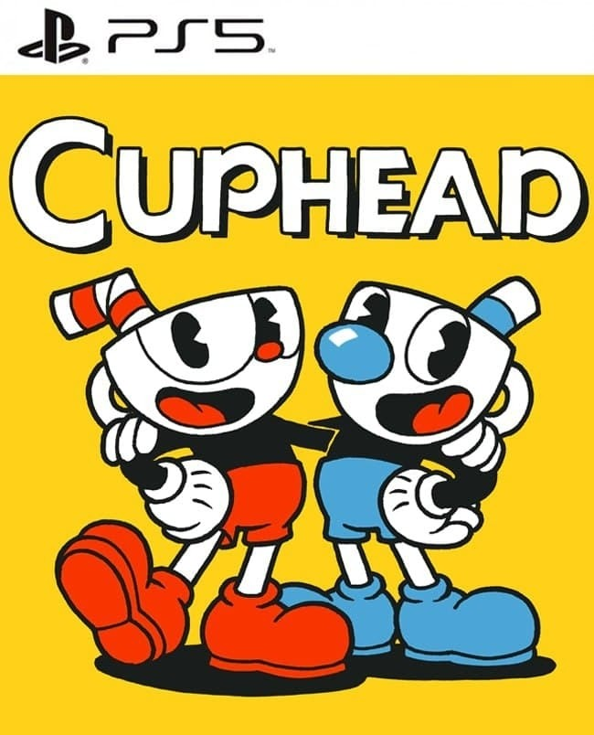
Cuphead y Mugman pierden una apuesta contra el Diablo y quedan obligados a cobrar deudas de otros deudores. Para recuperar sus almas, deberán enfrentarse a numerosos jefes en combates inspirados en las caricaturas de los años 30

V, un mercenario de Night City, acepta un trabajo que termina introduciendo en su cabeza la personalidad del famoso rockero Johnny Silverhand. Mientras busca una forma de sobrevivir, V se ve envuelto en conflictos entre corporaciones, bandas y criminales.
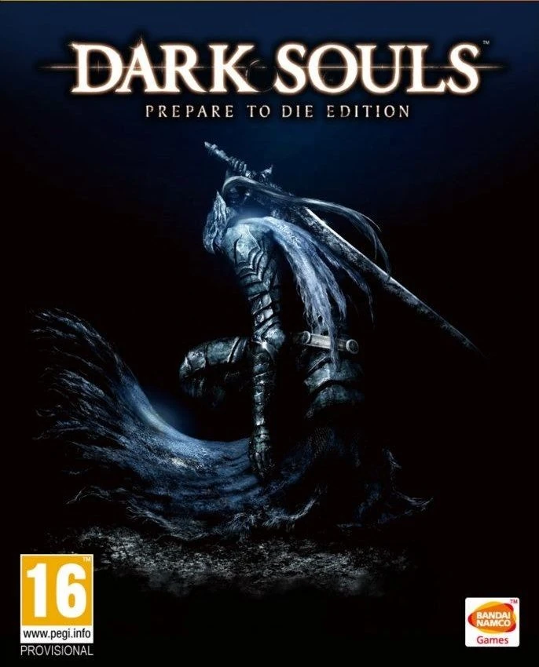
El jugador controla a un no-muerto elegido que viaja por Lordran, un mundo en decadencia dominado por monstruos, caballeros y seres legendarios. Para descubrir su destino deberá superar enemigos extremadamente difíciles y descubrir la historia oculta del mundo.
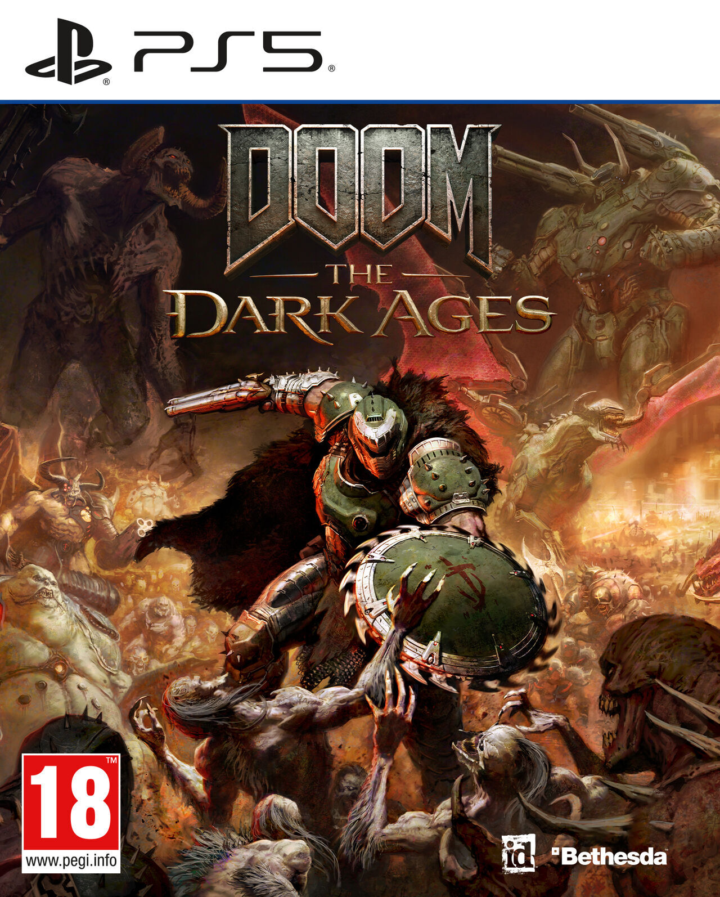
El jugador controla a un no-muerto elegido que viaja por Lordran, un mundo en decadencia dominado por monstruos, caballeros y seres legendarios. Para descubrir su destino deberá superar enemigos extremadamente difíciles y descubrir la historia oculta del mundo.
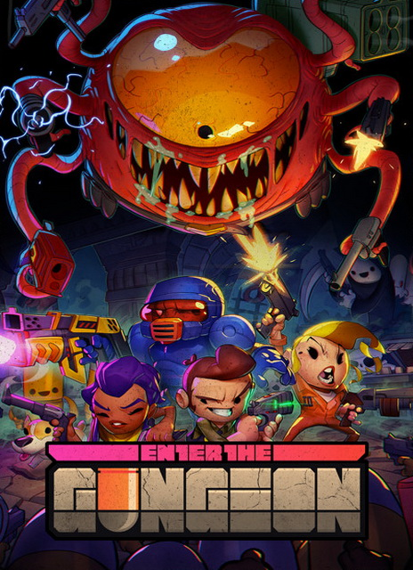
Un grupo de aventureros entra en una enorme mazmorra conocida como el Gungeon en busca de un arma capaz de matar su propio pasado. Para conseguirla tendrán que superar salas llenas de enemigos, trampas y armas absurdas.
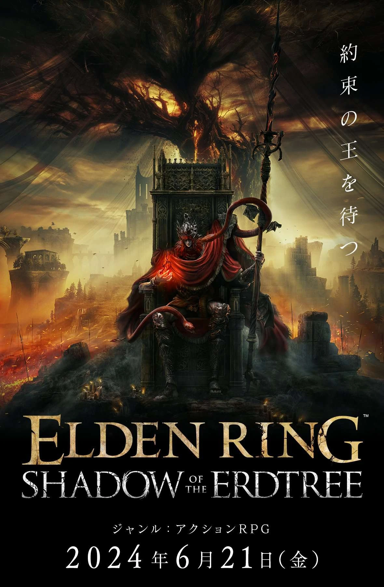
Expansión de Elden Ring que lleva al jugador a la Tierra Sombría, una región misteriosa relacionada con Miquella. Allí deberá descubrir los secretos de esta tierra y enfrentarse a nuevos enemigos y poderosos jefes.
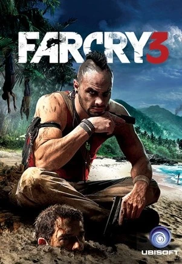
Jason Brody queda atrapado en una isla controlada por piratas liderados por el perturbador Vaas. Para rescatar a sus amigos, Jason tendrá que aprender a sobrevivir y convertirse progresivamente en un guerrero.

Un juego multijugador en el que los jugadores compiten para ser los últimos supervivientes mientras exploran un mapa, consiguen armas y construyen estructuras. Su universo también ha incorporado numerosos eventos y personajes de otras franquicias.
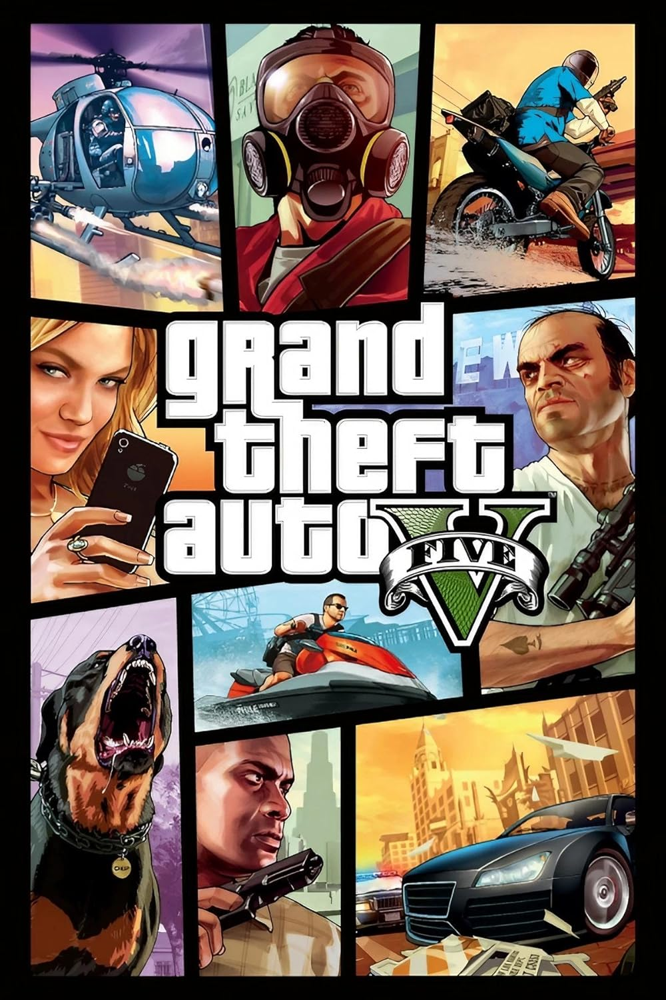
Un juego multijugador en el que los jugadores compiten para ser los últimos supervivientes mientras exploran un mapa, consiguen armas y construyen estructuras. Su universo también ha incorporado numerosos eventos y personajes de otras franquicias.
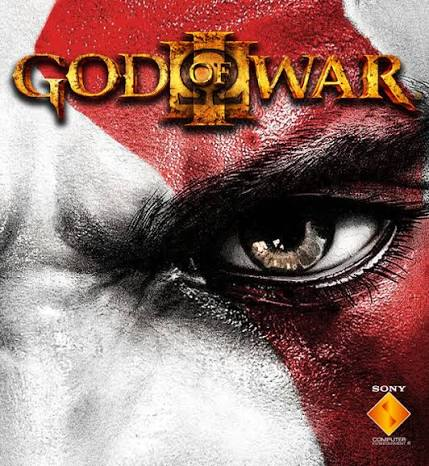
Kratos regresa para continuar su venganza contra los dioses del Olimpo. Con la ayuda de los Titanes, emprende una guerra brutal contra Zeus y las demás divinidades griegas.
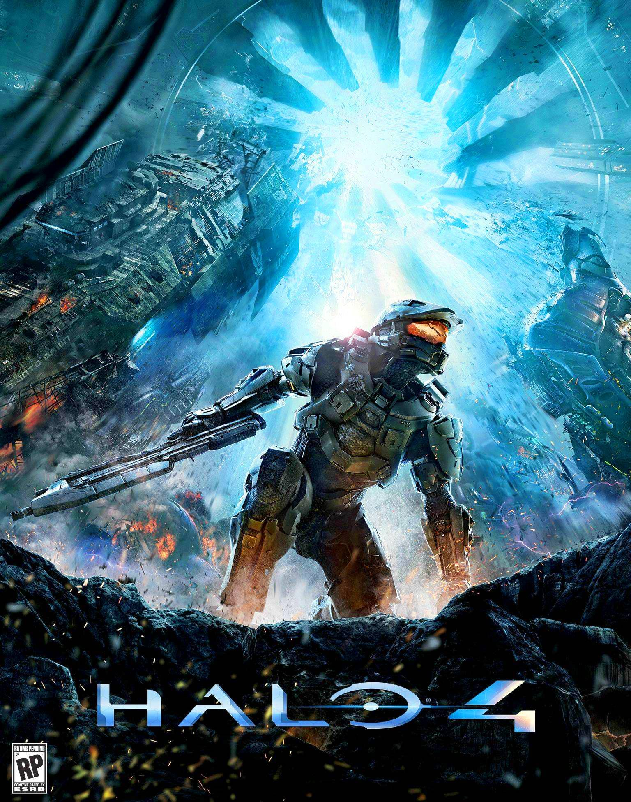
El supersoldado Master Chief debe enfrentarse al Covenant, una poderosa alianza alienígena. Tras descubrir el verdadero propósito de una misteriosa instalación conocida como Halo, deberá evitar una amenaza mucho mayor.
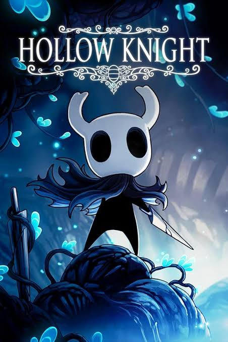
Un misterioso guerrero insecto llega al reino abandonado de Hallownest. Mientras explora sus ruinas, descubre una antigua infección y los secretos que llevaron al reino a la destrucción.
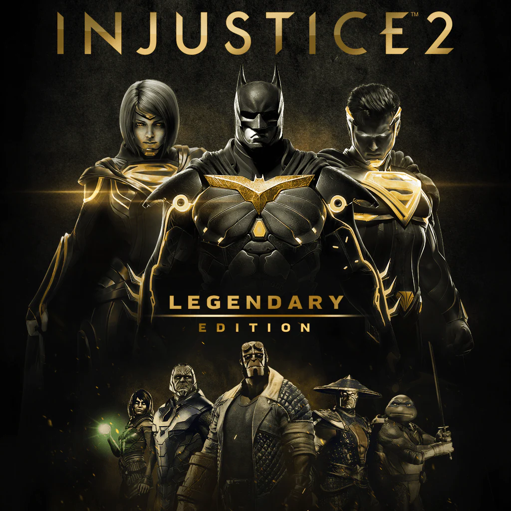
Los héroes y villanos del universo DC se enfrentan después de los acontecimientos del primer Injustice. Batman intenta reconstruir la sociedad mientras aparece una nueva amenaza que obliga a antiguos enemigos a decidir si pueden trabajar juntos.
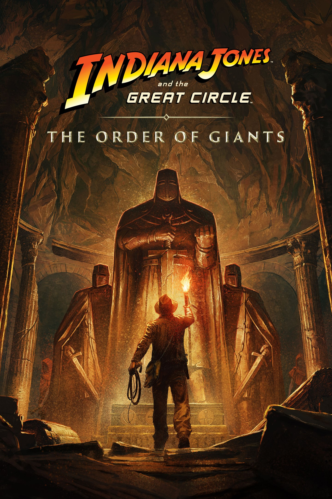
Indiana Jones se embarca en una aventura arqueológica que lo lleva por distintos lugares del mundo mientras investiga un misterioso secreto relacionado con el Gran Círculo. En el camino tendrá que resolver acertijos, explorar ruinas y enfrentarse a enemigos.
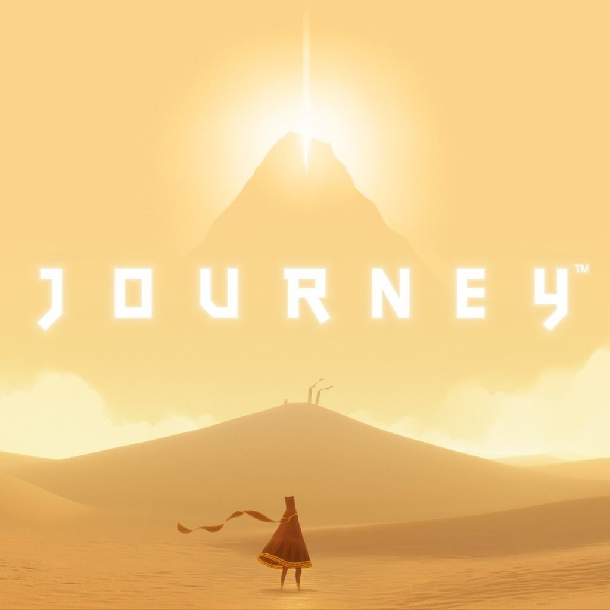
Un misterioso viajero atraviesa un enorme desierto con el objetivo de alcanzar una montaña situada a lo lejos. Sin diálogos, el juego cuenta su historia mediante imágenes, música y exploración.
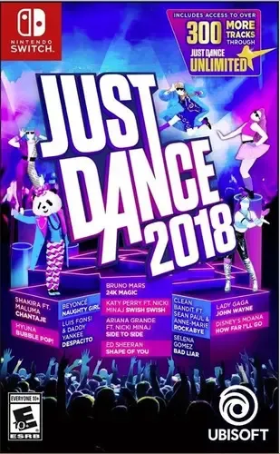
Juego de baile en el que los jugadores deben seguir las coreografías mostradas en pantalla al ritmo de diferentes canciones. El objetivo principal es conseguir la mayor puntuación posible bailando correctamente.
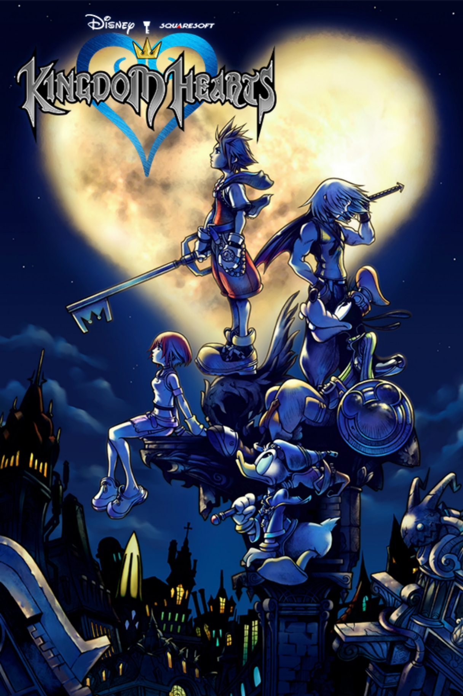
Sora emprende un viaje para encontrar a sus amigos Riku y Kairi después de que su mundo sea destruido. Con la ayuda de Donald y Goofy, visita diferentes mundos inspirados en películas de Disney mientras lucha contra los Heartless.
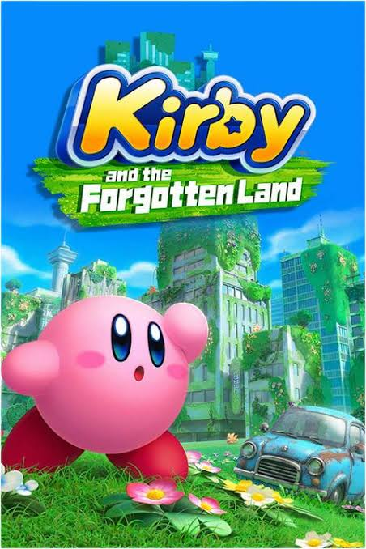
Kirby es transportado a un misterioso mundo abandonado donde los animales están siendo secuestrados. Para salvarlos, deberá recorrer diferentes zonas y utilizar sus habilidades, incluida su nueva capacidad de absorber objetos grandes.

P, un muñeco creado por el inventor Geppetto, despierta en la ciudad de Krat durante una rebelión de marionetas. Mientras busca a su creador, descubre una historia oscura llena de experimentos, conspiraciones y decisiones relacionadas con la humanidad.
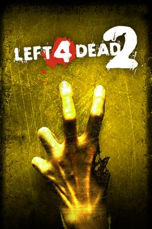
Cuatro supervivientes intentan escapar de una ciudad devastada por una infección que ha convertido a gran parte de la población en criaturas violentas. Juntos deben atravesar distintos escenarios mientras enfrentan hordas de infectados.
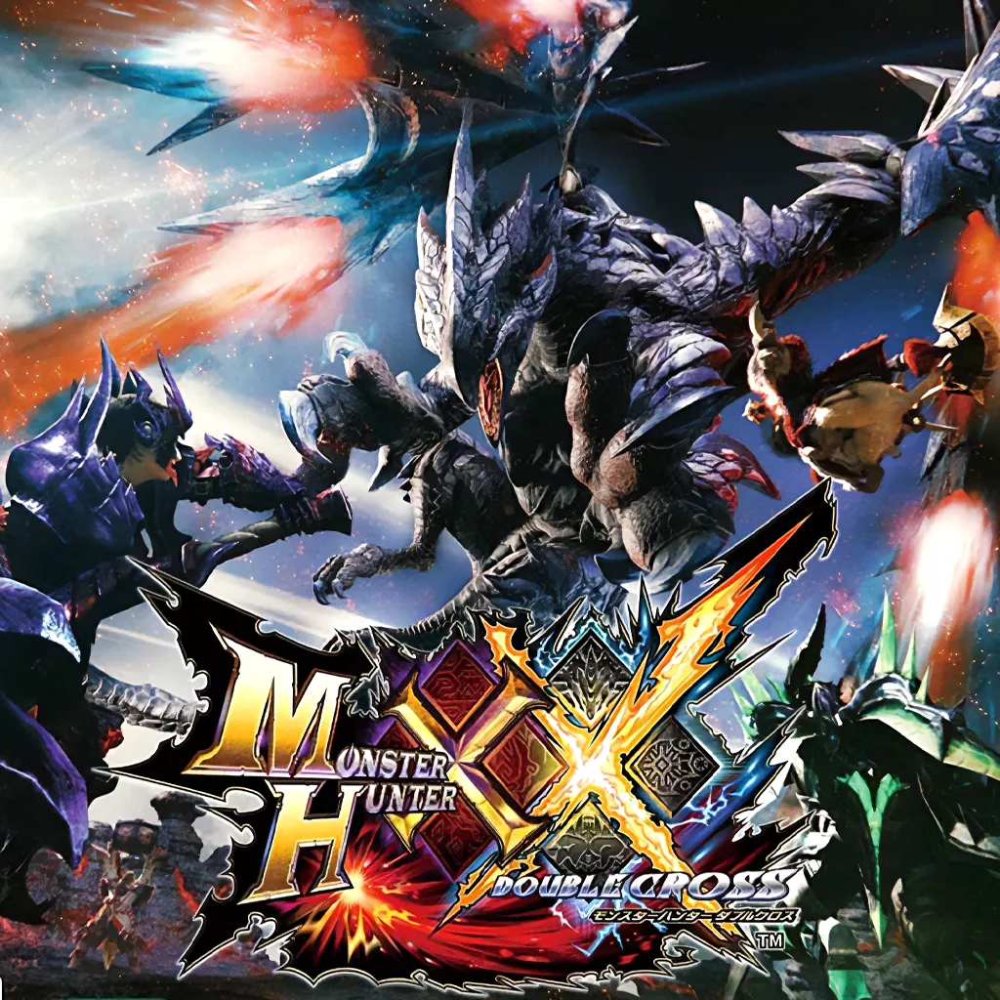
Los cazadores recorren diferentes regiones para enfrentarse a enormes monstruos. Al derrotarlos pueden fabricar mejores armas y armaduras, permitiéndoles enfrentarse a criaturas todavía más poderosas.
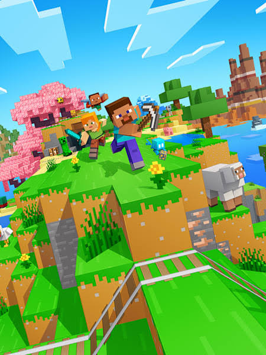
El jugador aparece en un mundo generado aleatoriamente formado por bloques. Puede explorar, construir, combatir monstruos, conseguir recursos y sobrevivir, o simplemente utilizar el mundo para crear prácticamente cualquier cosa.
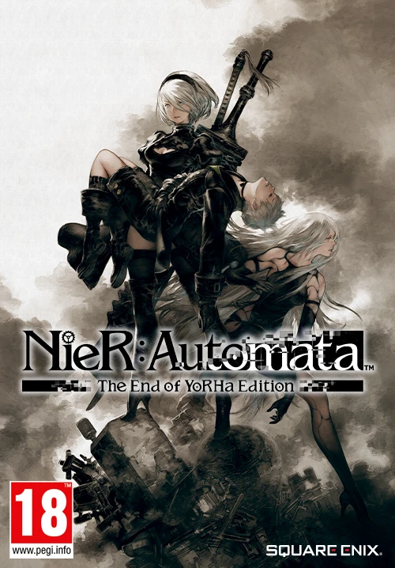
Androides creados por la humanidad luchan contra máquinas en una Tierra abandonada. 2B, 9S y A2 descubren progresivamente que la guerra que creían conocer es mucho más compleja de lo que imaginaban.
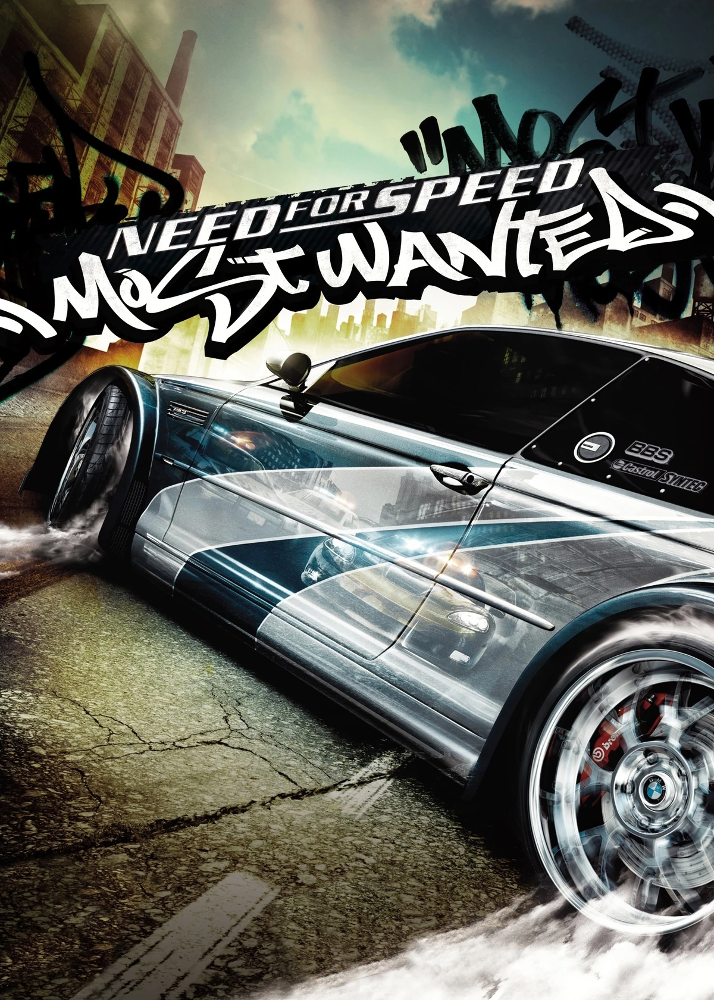
Un corredor llega a Rockport y pierde su coche tras ser engañado por el corredor rival Razor. Para recuperarlo, deberá subir por la lista negra de los mejores corredores de la ciudad y finalmente enfrentarse a Razor.
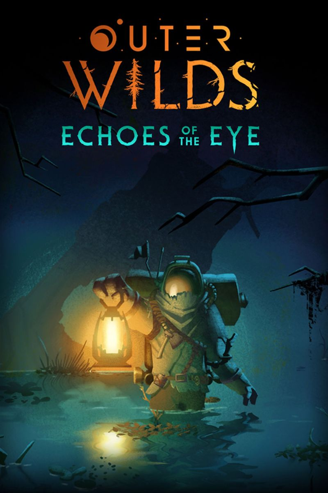
Un astronauta se encuentra atrapado en un ciclo temporal de 22 minutos antes de que el sistema solar sea destruido. Explorando diferentes planetas deberá descubrir qué está ocurriendo y desentrañar el misterio de una antigua civilización.
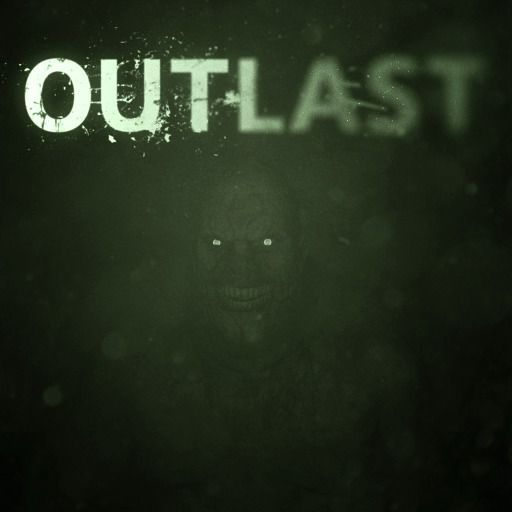
El periodista Miles Upshur entra en el abandonado hospital psiquiátrico Mount Massive para investigar unos rumores. Sin armas para defenderse, tendrá que esconderse y huir mientras descubre los horrores que ocurren dentro del lugar.
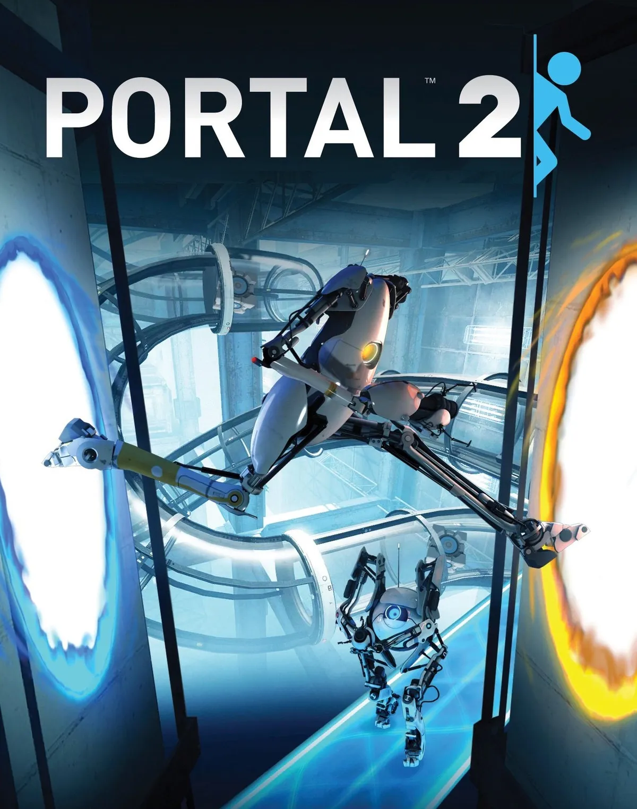
Chell despierta nuevamente en las instalaciones de Aperture Science y debe utilizar un arma capaz de crear portales para resolver complejos acertijos. Acompañada por la inteligencia artificial Wheatley, descubrirá nuevos secretos sobre las instalaciones y sobre GLaDOS.
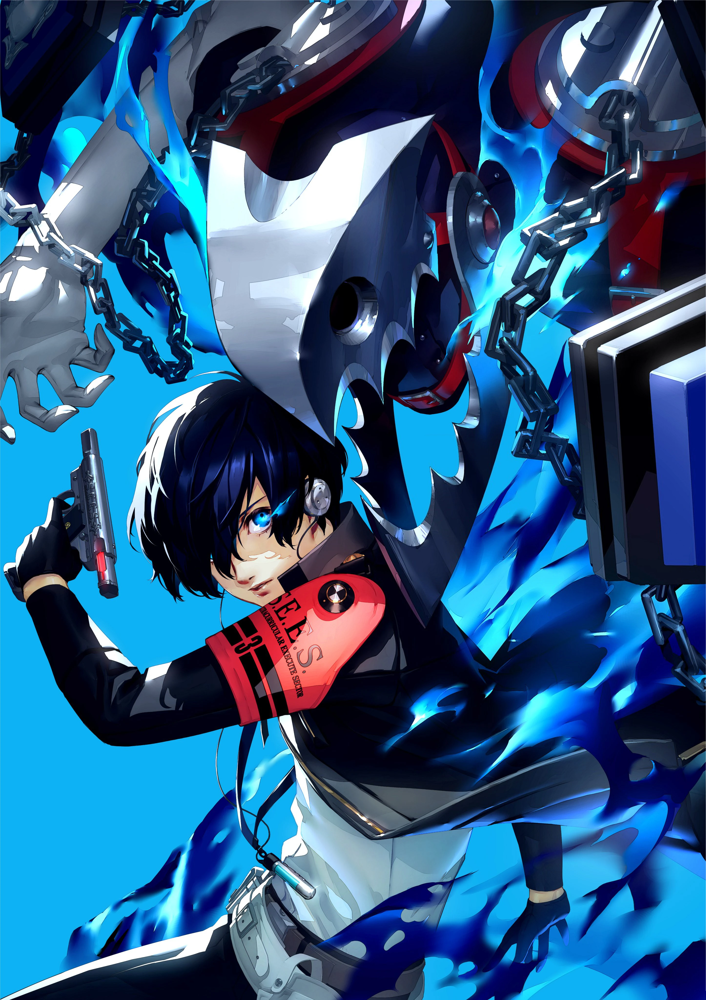
Un estudiante se muda a una nueva ciudad y descubre que existe una hora secreta conocida como la Hora Oscura. Junto a otros estudiantes que poseen poderes especiales, deberá explorar una enorme torre y enfrentarse a criaturas llamadas Sombras mientras intenta descubrir el origen de esta amenaza.

Un soldado conocido como Ranger debe combatir una invasión de criaturas de otra dimensión. Para detenerlas, atraviesa bases militares, castillos y dimensiones infernales llenas de monstruos.
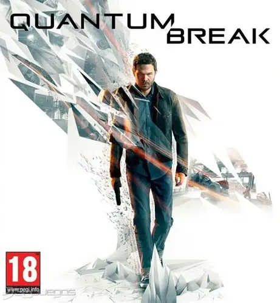
Jack Joyce obtiene poderes capaces de manipular el tiempo después de un experimento científico fallido. Mientras intenta detener una catástrofe temporal, descubre una conspiración relacionada con una poderosa corporación.

Ethan Winters viaja a una plantación abandonada en Luisiana buscando a su esposa desaparecida, Mia. Allí se encuentra con la aterradora familia Baker y descubre que una misteriosa infección ha transformado completamente a sus habitantes.

Arthur Morgan es miembro de la banda de Dutch van der Linde, que intenta sobrevivir mientras el Viejo Oeste está desapareciendo. Entre robos, persecuciones y conflictos internos, Arthur comienza a cuestionar la vida que ha elegido.

Wander viaja a una tierra prohibida llevando el cuerpo de una joven llamada Mono. Una entidad le promete devolverla a la vida si derrota a dieciséis gigantescos colosos que habitan la región.
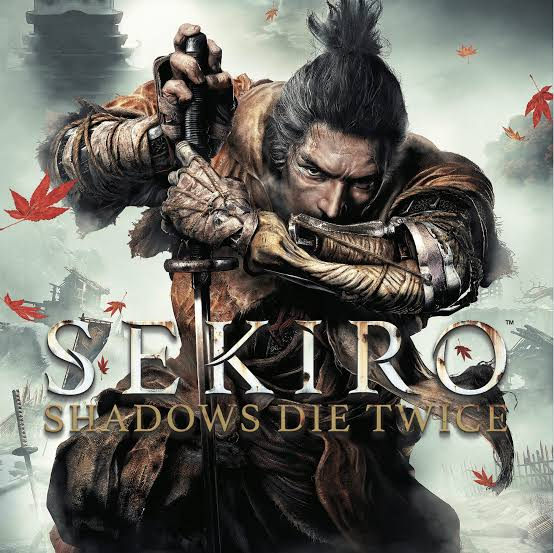
Un shinobi conocido como el Lobo intenta rescatar a su joven señor, Kuro, quien posee una misteriosa sangre capaz de otorgar inmortalidad. Para conseguirlo deberá enfrentarse a guerreros, criaturas sobrenaturales y poderosos enemigos en el Japón del período Sengoku.
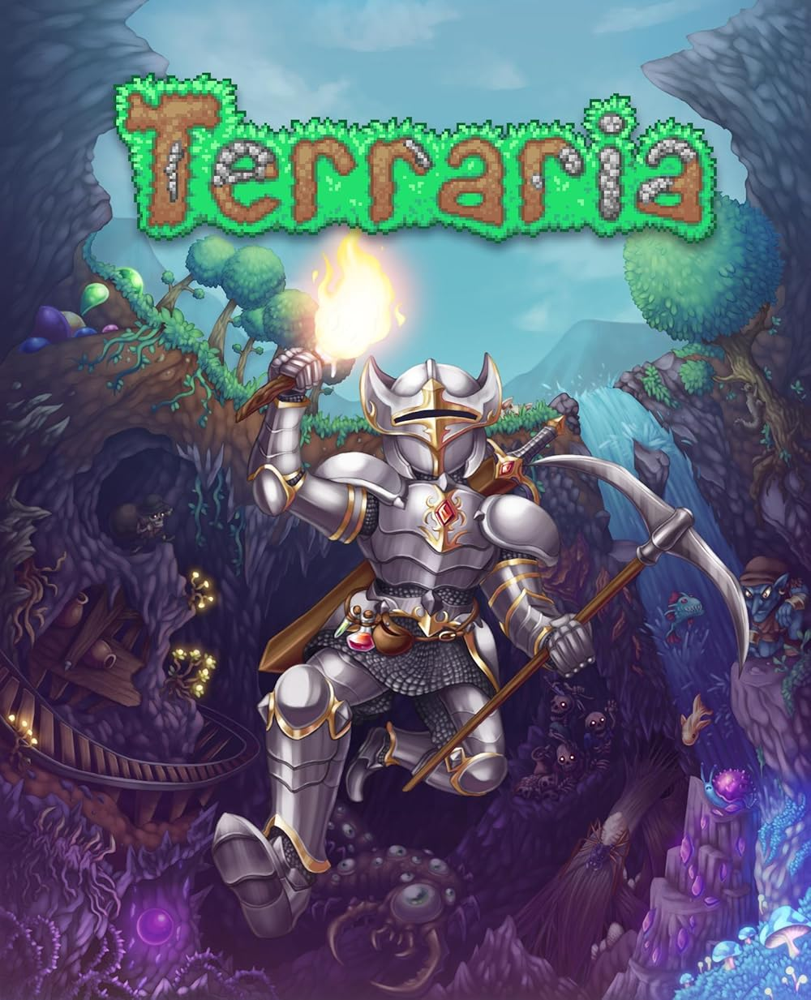
El jugador aparece en un mundo lleno de recursos, criaturas y secretos. Puede explorar cavernas, construir estructuras, fabricar equipamiento y enfrentarse a numerosos jefes mientras descubre un mundo que cambia constantemente.
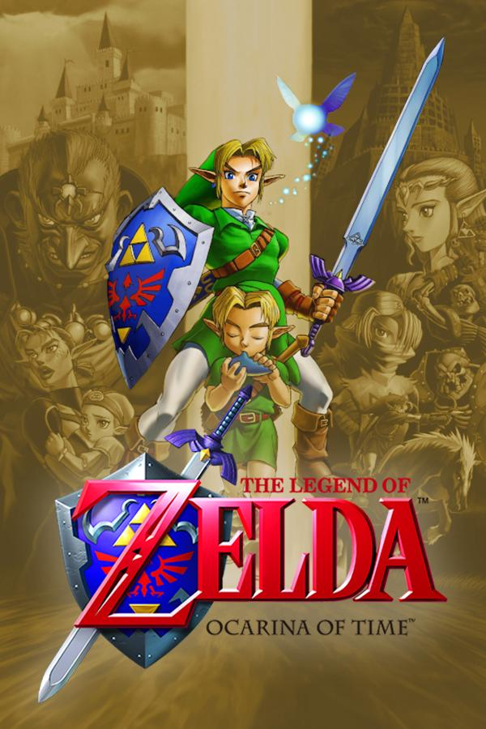
Link debe abandonar el bosque Kokiri para detener al malvado Ganondorf. Con la ayuda de la Princesa Zelda y la Ocarina del Tiempo, deberá viajar entre diferentes épocas para salvar Hyrule.

Un humano cae accidentalmente en un mundo subterráneo habitado por monstruos. Para regresar a la superficie deberá atravesar este mundo y tomar decisiones que pueden determinar el destino de sus habitantes.
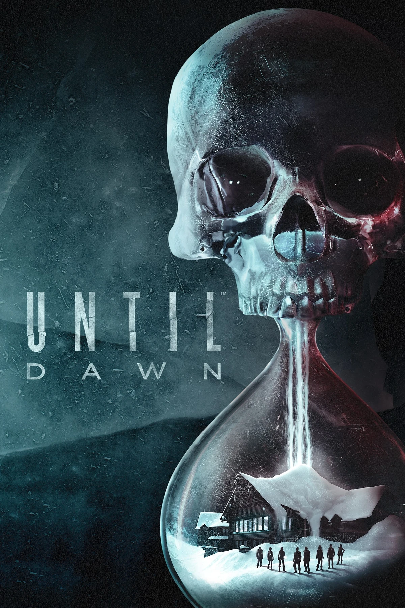
Un grupo de jóvenes regresa a una cabaña en una montaña un año después de la desaparición de dos de sus amigos. Una noche de terror comienza y las decisiones del jugador determinarán quién sobrevive.
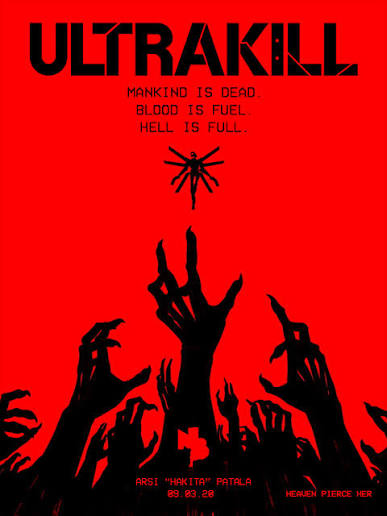
En un futuro donde la humanidad ha desaparecido, una máquina de combate llamada V1 desciende al Infierno para obtener sangre y mantenerse funcionando. El juego combina velocidad extrema, disparos y combates frenéticos contra demonios y máquinas.
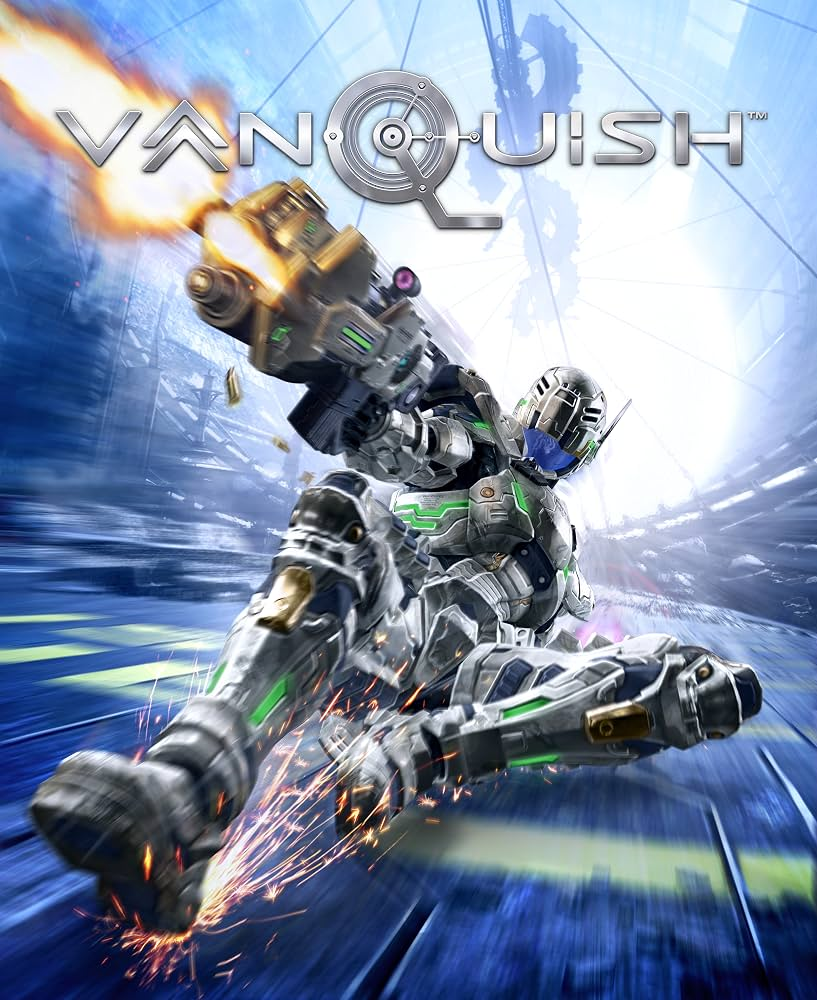
Sam Gideon es enviado a una colonia espacial atacada por una organización terrorista que utiliza tecnología avanzada. Equipado con una armadura de combate futurista, debe abrirse paso entre ejércitos de máquinas y detener una amenaza mundial.
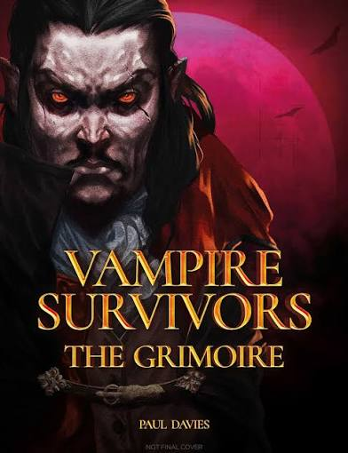
El jugador controla a diferentes personajes que deben sobrevivir durante oleadas cada vez mayores de monstruos. Las armas atacan automáticamente, por lo que la clave está en moverse, conseguir experiencia y elegir mejoras estratégicamente.

Los jugadores crean un personaje y exploran el enorme mundo de Azeroth. Allí pueden completar misiones, luchar contra monstruos, formar grupos con otros jugadores y participar en conflictos entre diferentes facciones.

Aiden Pearce, un hacker y antiguo criminal, busca vengarse de quienes provocaron la tragedia de su familia. Utilizando el sistema informático de Chicago, puede manipular cámaras, semáforos, teléfonos y otros dispositivos para infiltrarse y combatir a sus enemigos.
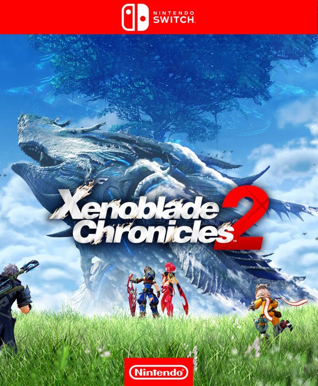
Rex, un joven buceador, conoce a Pyra, una misteriosa Blade que le pide llevarla al legendario paraíso llamado Elysium. Juntos emprenden un viaje que los enfrentará a diferentes naciones, titanes y secretos sobre el mundo.
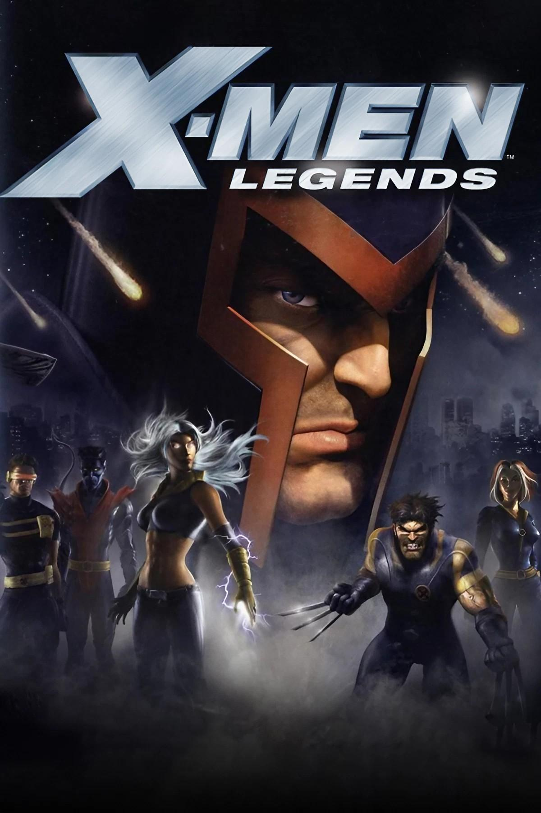
El jugador controla a un grupo de X-Men que debe enfrentarse a la Hermandad de Mutantes y a otras amenazas. A lo largo de la aventura, los personajes combinan sus poderes para luchar contra enemigos y superar obstáculos.
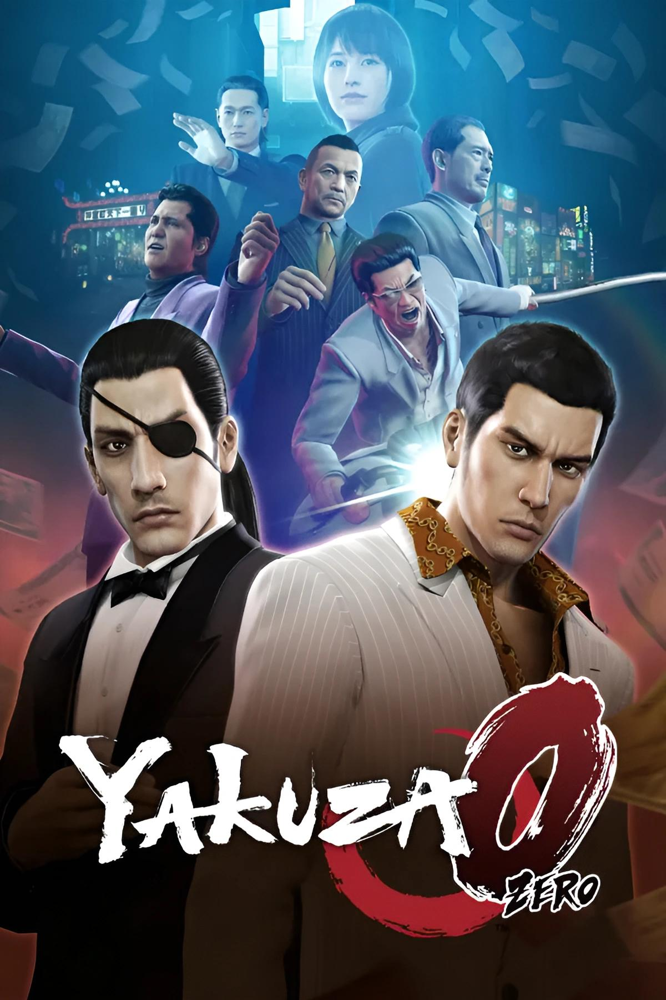
Kazuma Kiryu y Goro Majima protagonizan dos historias ambientadas en el Japón de los años 80. Ambos se ven involucrados en conflictos de la yakuza relacionados con un pequeño terreno que podría cambiar el equilibrio de poder entre las organizaciones criminales.
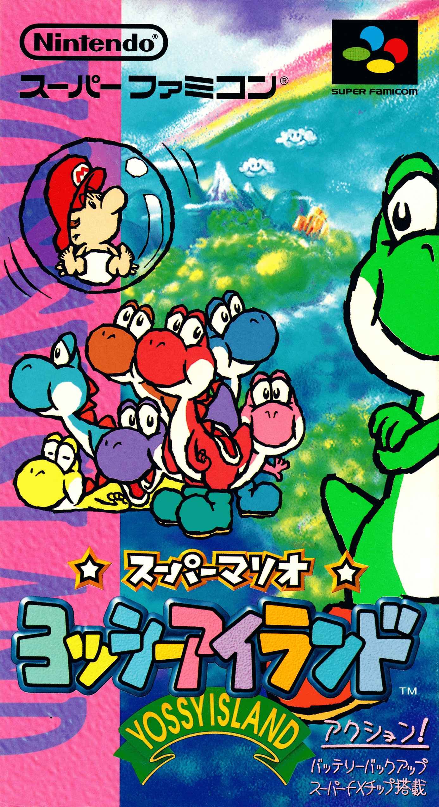
Yoshi debe transportar al bebé Mario a través de una isla peligrosa para reunirlo con su hermano Luigi. Durante el viaje tendrá que enfrentarse a enemigos, superar obstáculos y utilizar sus habilidades para proteger al pequeño Mario.
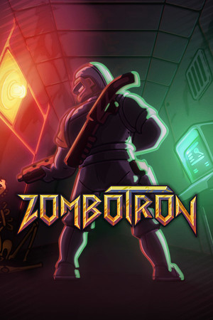
Un soldado espacial aterriza en un planeta abandonado donde descubre que está habitado por zombis, robots y otras criaturas. Para sobrevivir deberá explorar las instalaciones, conseguir armas y descubrir qué ocurrió con los antiguos habitantes.
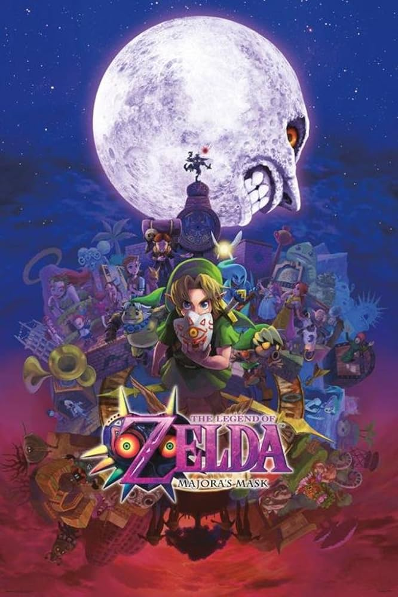
Link llega a Termina, un mundo amenazado por una luna que caerá sobre la tierra en tres días. Gracias a la Ocarina del Tiempo puede repetir el ciclo temporal mientras busca una manera de detener la catástrofe y descubrir los secretos de Skull Kid y la Máscara de Majora.